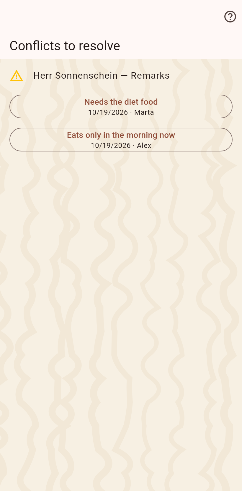

Fields two people changed at the same time, before their devices synced. Each row shows both values; pick the right one, and the choice reaches every device.

The two values are buttons with who wrote them and when; a tap keeps one and writes it as an ordinary entry, so every partner gets the decision with the next sync. The page lists the open conflicts and closes when the last is settled; until then the home's menu names them with a count.
On the arrival page after a sync, on this page from the home's menu, and as a warning sign on the field's row on the cat's page.